Bienvenido a la guía de usuario para la pantalla COCATRAM del sistema PLS. Esta guía está
diseñada para ayudarte a utilizar y comprender de forma sencilla y directa las funcionalidades que ofrece
esta pantalla.
1. Introducción
Ubicada dentro del submenú Almacenamiento de Datos ofrece la posibilidad de crear, editar,
filtrar visualizar y eliminar las diversas clases registradas en el sistema.
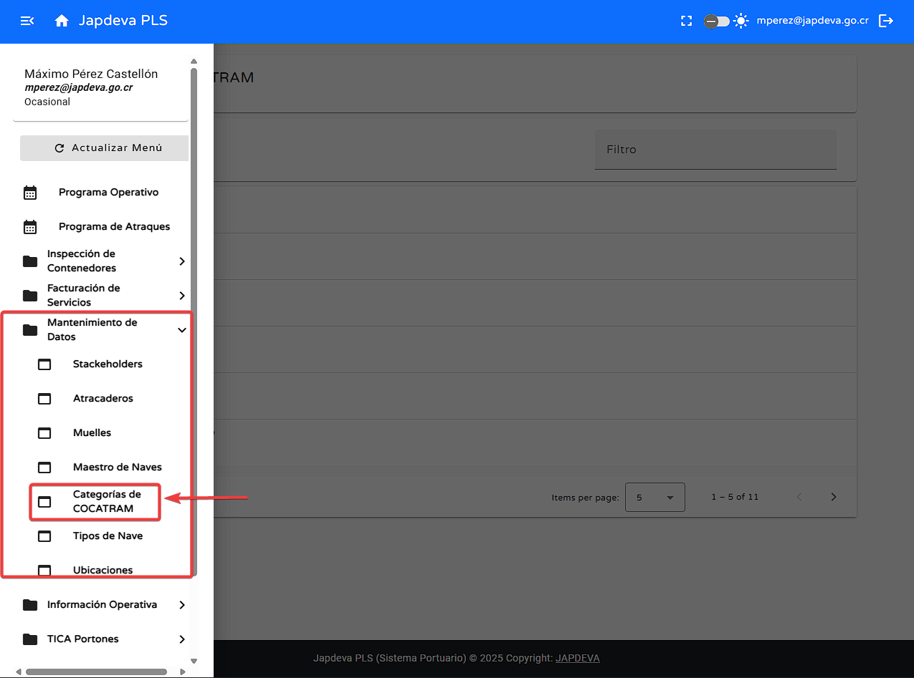
Consejo: Esta guía está diseñada para ser leída en orden, pero puedes saltar a las
secciones que necesites usando el menú de contenido.
2. Funciones principales
1
Registrar categoría
Para agregar una nueva categoría se debe de seguir los siguientes pasos:
Nos dirigimos a la parte superior izquierda sobre el botón de acciones y damos clic sobre
este.
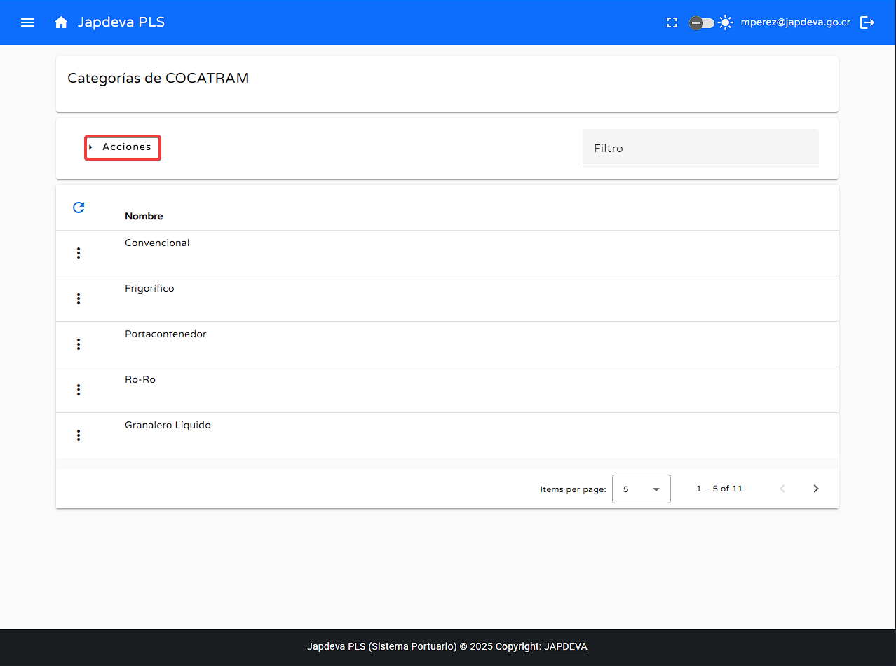
Al haber dado clic sobre el se desplegará una ventana emergente con la opción Registrar
categoría.
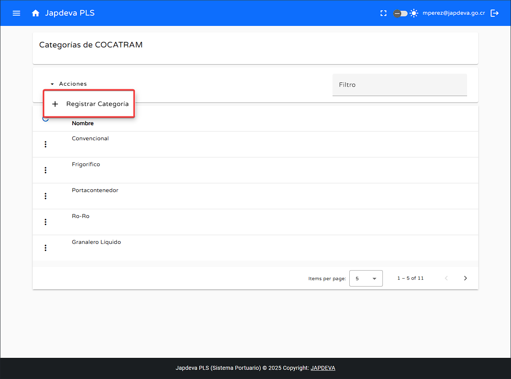
Dentro de la ventana emergente se deben de rellenar los datos necesarios para la creación de una
nueva categoría.
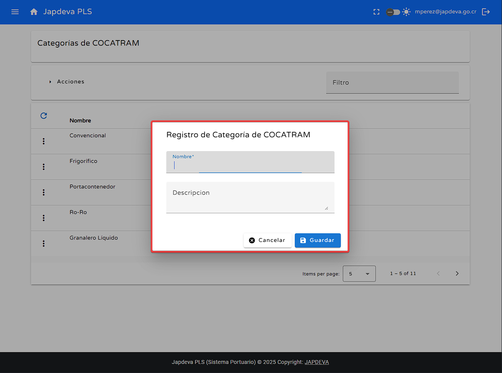
Con lo anterior claro comencemos con la guía de cada uno de los campos.
Creación de una nueva categoría
Nombre: El primer campo que encontraremos en este apartado será el campo
Nombre en el cual se debe de ingresar el nombre de la categoría que se desea crear.
(Siempre y cuando sea una categoría oficial de COCATRAM)
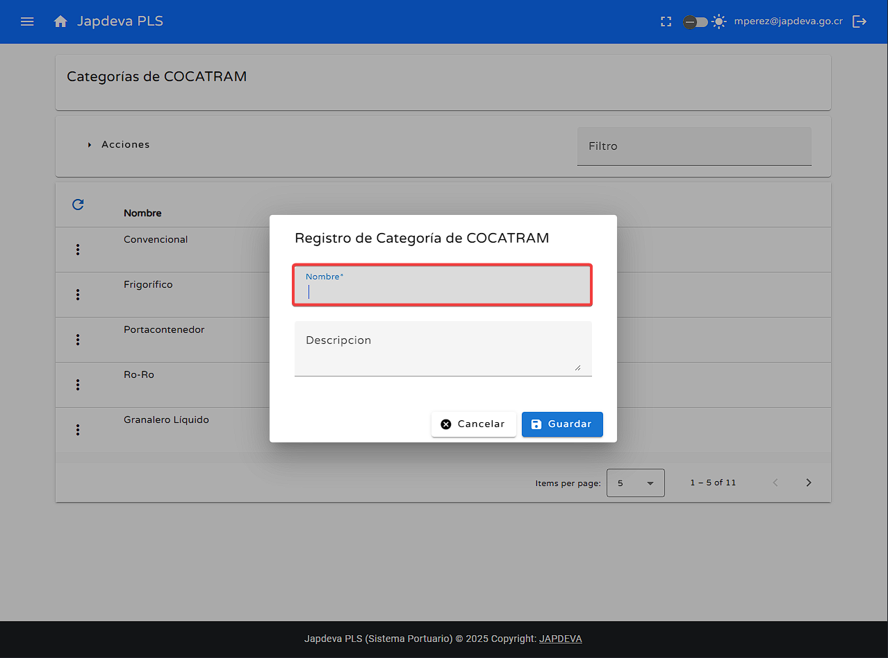
Descripción: El último campo que encontraremos en este apartado sería la
descripción de la categoría que se desea crear.
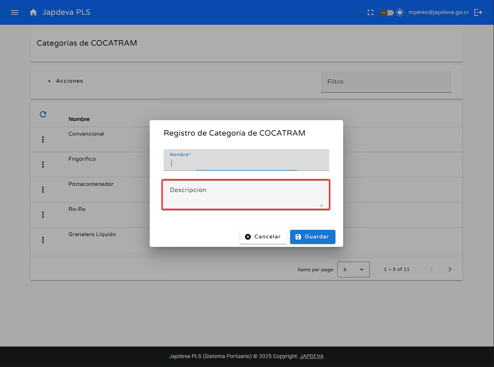
Una vez completados todos los campos se puede dar clic en el botón de Guardar para completar la operación.
En caso de desear cancelar la operación se puede dar clic en el botón de Cancelar para abortar
la operación.
Advertencia: El campo Nombre es obligatorio para la creación de una
nueva categoría.
2
Función búsqueda por filtro
Para realizar la función búsqueda mediante filtro realizamos lo siguiente:
Ubicamos el espacio en blanco con la leyenda Filtro.
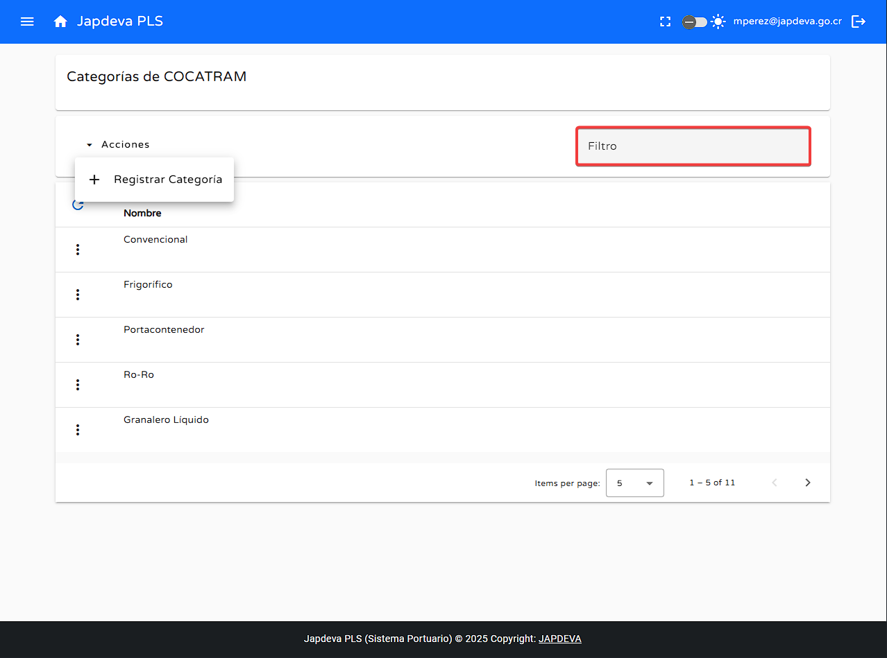
Dentro de ese espacio escribimos el dato que deseamos buscar en la tabla presente en pantalla.
(Siempre y cuando exista en la base de datos).
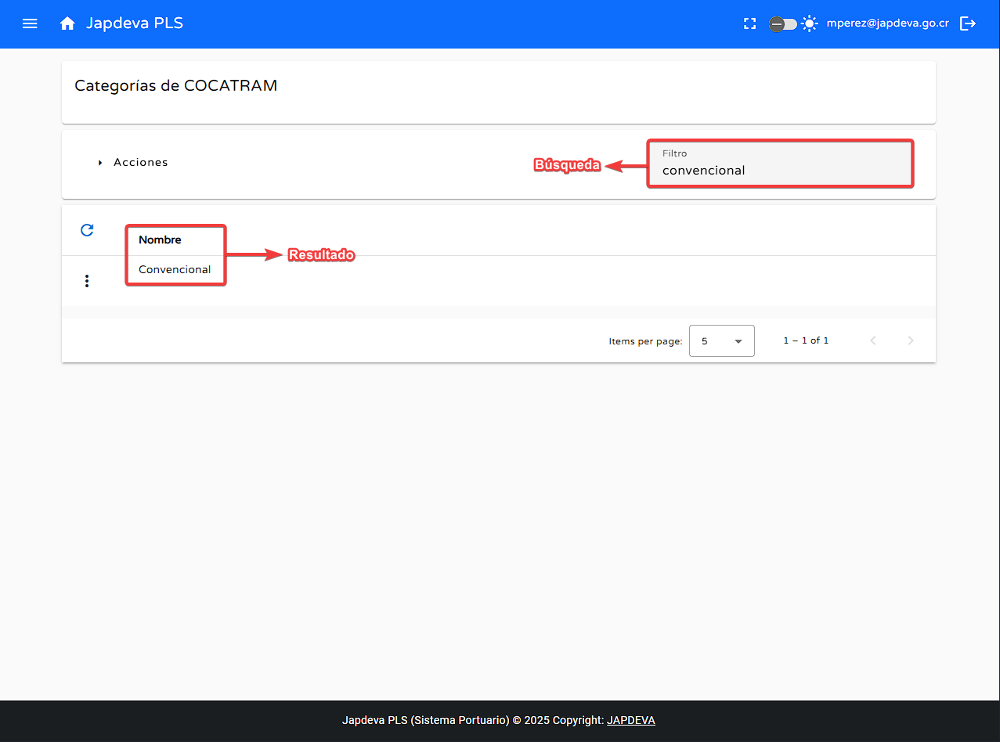
3
Función refrescar información
Para lograr la función de refresco se debe de realizar lo siguiente:
Nos ubicamos en el botón de refresco el cual se ubica en la parte superior izquierda de la
tabla en pantalla.
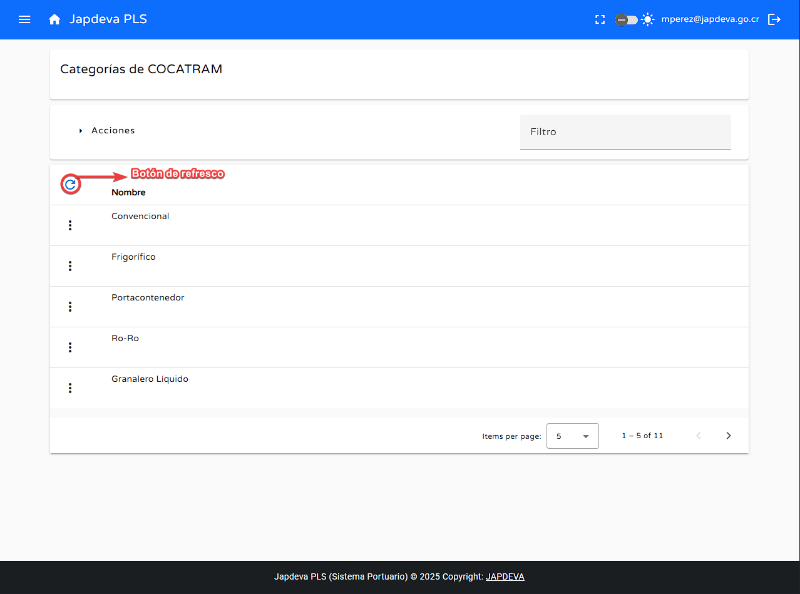
Sí al dar clic existe información nueva que aún no había sido reflejada en pantalla se mostrará de
manera automática en la tabla presente.
4
Función editar
Para editar una categoría existente en el sistema se deben de seguir los siguientes pasos:
Nos ubicamos en el botón de Opciones ubicado al lado izquierdo de cada una de las filas
existentes en la tabla reflejada.
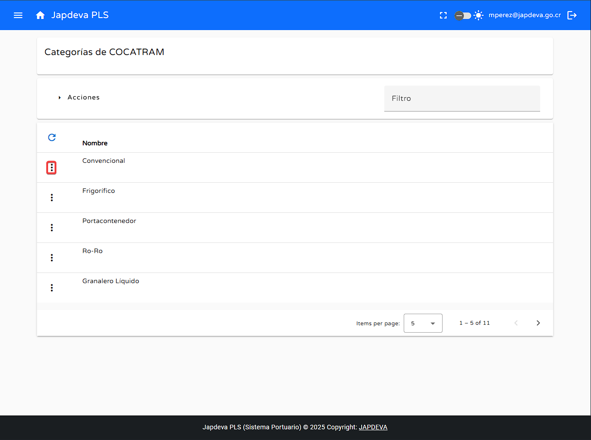
Al dar clic en cualquiera de estos botones de opción se desplegará una ventana con dos opciones
Editar y Eliminar.
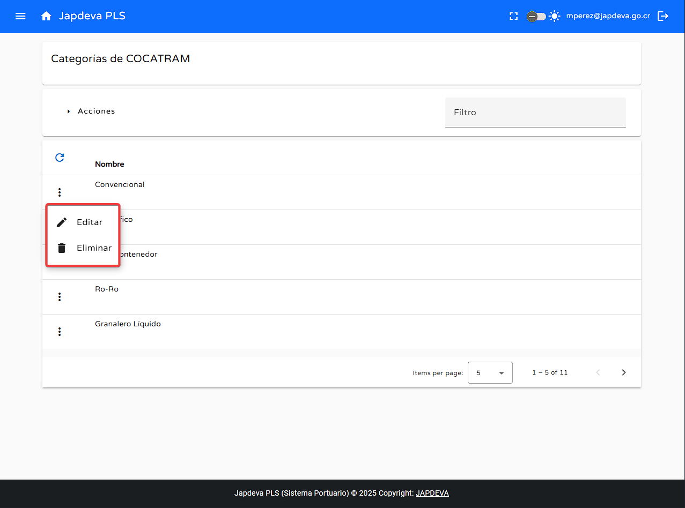
La primera opción Editar nos desplegará una ventana de edición de la categoría seleccionada
al dar clic en ella.
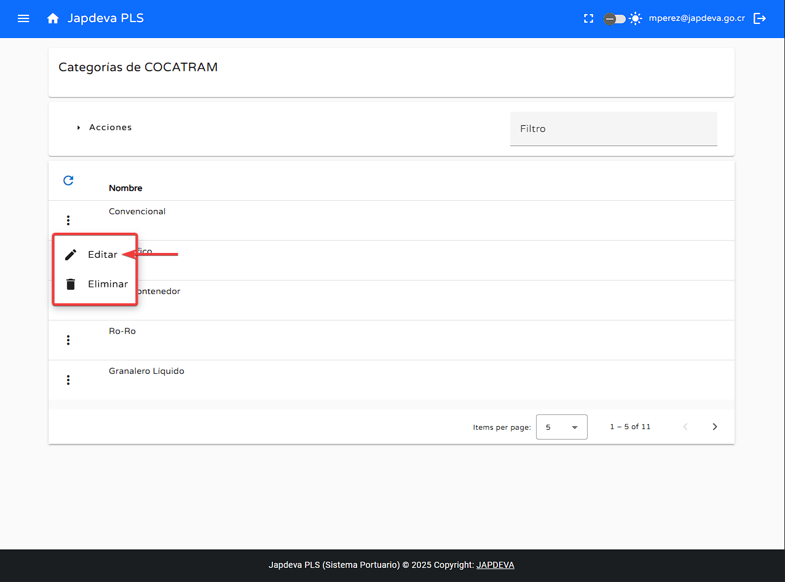
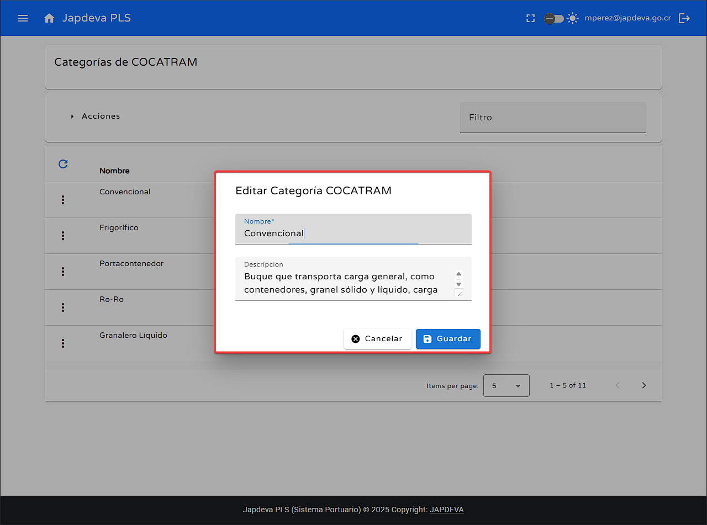
Por último, la opción de Eliminar nos ofrece la posibilidad de eliminar la categoría
seleccionada al dar clic en ella y confirmar la operación mediante otra pantalla de confirmación.
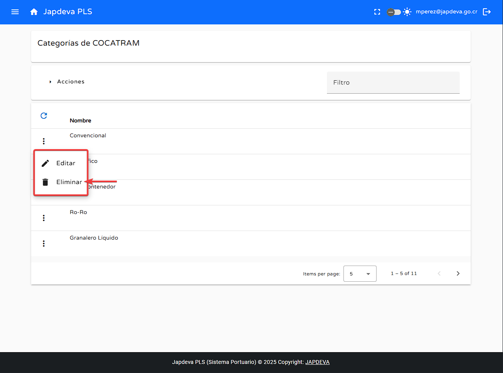
5
Visualización de información en pantalla Categorías de COCATRAM
Para brindar una explicación sencilla y directa de los diversos campos que ofrece la tabla presente en
pantalla se explicarán de forma resumida cada uno de ellos. (De izquierda a derecha).
Nombre: Nombre oficial de la categoría de COCATRAM.